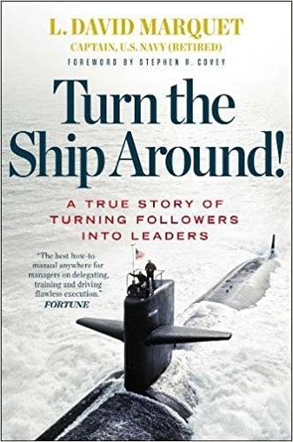

Library › Leadership
Turn the Ship Around!: A True Story of Turning Followers into Leaders — Summary & Key Lessons

A nuclear submarine captain was ordered to lead the worst-performing crew in the fleet. He broke every rule of command and made them the best.
📖 OPEN THE FULL INTERACTIVE BREAKDOWN →🌐 Read it in Hindi, Hinglish, Gujarati, Tamil & 22 more languages — free, with audio.
💡 The Big Idea
Marquet (a nuclear-trained officer expecting to command the well-drilled USS Olympia) was reassigned weeks before taking command of the Santa Fe (the fleet's worst ship, crewed by people he'd never met, on a reactor design he hadn't studied). His plan of knowing everything and issuing orders collapsed on day one: the crew, trained to obey, executed his orders blindly even when wrong, and he realized the architecture itself (leader-follower: one brain, many hands) was the problem. The alternative: leader-leader, pushing decision-making to the information (the crew), achieved through mechanisms: 'I intend to...' (crews announce intentions rather than await orders), eliminating 'we're waiting on you' as an excuse, deliberate hand-overs of knowledge, certifications replacing rote, and deliberate blindness tests. The result: Santa Fe went from worst retention and performance to the best in fleet inspections, and produced an unusual number of later officers and captains. The book is the most practical manual for distributed authority under real stakes.
🧠 The 8 Key Lessons
Lesson 1: Move Authority to Where the Information Lives
The Architecture Problem
The traditional org chart routes decisions upward (where information is poorest) and information downward (where decisions are weakest), guaranteeing latency and error. Marquet inverted it: the person closest to the information decides, leaders set context and guardrails. The design principle for any organization: every approval chain you maintain is latency you're buying with errors, and the fix is structural (redistribute decision rights), not motivational ('empowerment' slogans with no authority moved).
📖 Example: The Santa Fe's crew began making reactor-watch decisions locally (previously waiting for the captain's sign-off), and error rates FELL because decisions now happened where the sensors, context and consequences lived. Read the full example →
⚡ Do this: List your five most common approvals. Delete two this month by converting them to guardrails (criteria the decider must meet), and watch both speed and quality of the decisions.
Lesson 2: I Intend To...: Announce, Don't Await
The Mechanism
Instead of asking permission ('request permission to dive'), crew members stated intentions ('I intend to dive, because conditions are X, my plan is Y'), which kept authority with the actor while preserving the leader's ability to object. The mechanism transforms compliance into ownership: the brain that announces the plan is engaged, the leader becomes a safety check rather than a bottleneck. Works everywhere from startups to hospitals to families.
📖 Example: An officer announcing his intention to change course (with reasoning) gave Marquet the chance to catch a real error, proving the phrase isn't about politeness but about preserving the veto while redistributing the thinking. Read the full example →
⚡ Do this: Institute 'I intend to...' for your team's recurring decisions this week: they announce plan + reason, you object only with cause. Retire the phrase 'asking permission' from your vocabulary.
Lesson 3: Ban 'Waiting On' Language
Deliberate Action
Santa Fe banned passive framing ('waiting for orders', 'we can't because') and replaced it with deliberate action: every actor owns the next step. Marquet famously eliminated the crew's ability to blame waiting; if something upstream is missing, the crew member owns escalating or routing around it. The culture shift: from 'the process requires X before I can proceed' to 'I will get X or proceed deliberately without it and say so'.
📖 Example: The turn from 'you order, we execute' happened visibly when a sailor, asked why a task sat idle, stopped saying 'waiting on the chief' and started saying 'I'll get the chief' and did. Read the full example →
⚡ Do this: Audit this week's blockers: count how many cite 'waiting on'. Convert each owner's language to a next action they control, and date the change.
Lesson 4: Competence Precedes Trust, So Build It Deliberately
Certifications and Knowledge
Delegating authority to an unprepared crew is negligence, so Marquet's team built competence deliberately: quizzing at every handover, teaching whys not just hows, certifying on the equipment they operated. The lesson for leaders wanting to empower: capability-building is the price of admission; 'empowerment' without deliberate skill transfer is just abdication with better PR.
📖 Example: Watch-standers certified each other through oral exams; the crew's technical knowledge measurably rose (inspection scores followed), which is what made local authority safe instead of reckless. Read the full example →
⚡ Do this: Pick one person you've under-delegated to. Define the three competencies the delegation needs, build a two-week deliberate plan to close them, then hand over the authority with a date.
Lesson 5: Test for Blind Obedience
The Deliberate Blindness Exercise
The book's famous experiment: Marquet issued a deliberately wrong order ('ahead full' to a ship that wasn't underway... in context) and watched the crew nearly execute it without question, the moment that launched leader-leader. The ongoing practice: organizations need error-seeding exercises to reveal where obedience has replaced thinking, because the crew that never questions will one day faithfully execute a disaster.
📖 Example: The near-miss order (in rehearsal or drill, no harm done) became the origin story: the scariest finding wasn't the error, it was how completely trained obedience suppressed the crew's own senses. Read the full example →
⚡ Do this: Seed one deliberate 'wrong instruction' in a low-stakes drill or review this quarter. Grade your team on the QUESTIONING, not the compliance; debrief openly.
Lesson 6: Push Decisions Downward Before You Need To
Cascading Intent
Marquet briefed orders as intent ('our mission is X; we will be ready to do Y by Z') rather than tasks, letting each layer decide its own methods: alignment on the why, freedom on the how. The mechanism scales because intent is compressible while instructions bloat. Any leader can convert one order per week into an intent statement and measure how much better the execution fits local reality.
📖 Example: A fleet inspection (normally chaos) ran smoothly because departments pre-decided their own responses from shared intent, rather than executing a checklist someone upstream had written without their context. Read the full example →
⚡ Do this: Take your next 'do A, then B, then C' directive and reissue it as mission + constraints + success criteria. Let the team present their method back to you in 48 hours.
Lesson 7: Retention and Morale Follow Ownership
The People Result
Santa Fe's retention (the fleet's worst) became exceptional; crew morale and re-enlistment soared under leader-leader, not because conditions softened but because ownership replaced spectatorship. People stay where they decide; they leave where they're done to. The retention lesson for every industry: before your exit interviews blame pay, audit how many decisions your people actually own.
📖 Example: The crew that re-enlisted cited the same cause in different words: 'I was trusted with real things.' The submarine became a leadership factory, producing more officers per capita than any peer. Read the full example →
⚡ Do this: For your three most at-risk performers, write down every decision they own vs execute. Move one real decision to each of them this week; retention follows ownership, not pizza.
Lesson 8: Leadership Is a System, Not a Personality
The Final Lesson
The book's lasting claim: Santa Fe's transformation survived Marquet's departure (multiple later captains came from its crew) because the MECHANISMS (intent-to announcements, WIP of decisions, certifications, deliberate action language) carried the culture without the charismatic founder. Leadership that depends on the leader is a subscription; leadership embedded in mechanisms is an asset. Build the second kind.
📖 Example: Years later, Santa Fe kept winning awards under captains who'd never met Marquet: the checklist of mechanisms in the book's appendix is the proof leadership transferred as a system. Read the full example →
⚡ Do this: Write down the three mechanisms (not values, MECHANISMS) that would keep your team's culture if you vanished tomorrow. If you can't name three, your culture is a subscription; convert one this quarter.
✅ 5-Step Action Plan
- Delete two approval chains by converting them to guardrails this month.
- Institute 'I intend to...' for recurring decisions starting this week.
- Convert blockers language from 'waiting on' to owned next actions.
- Build competence deliberately before handing authority; set the handover date.
- Write your three culture mechanisms that survive your departure.
⚠️ When This Doesn't Work
Marquet writes as both practitioner and convert (he now consults on leader-leader): the submarine context made consequences legible and metrics crisp, which knowledge-work transfers will lack, and some readers note military discipline itself did groundwork civilian teams won't have. The mechanism list (appendix) is the transferable core. Read it as the best argument ever written for redistributing authority, written by a man whose first day proved the alternative fatal.
💀 The Graveyard Proves It
🛫 Jet Airways — The Founder Who Couldn't Let Go. Burn: India's premier airline, 20,000 jobs. Read the full case study →
💬 Best Quotes from Turn the Ship Around!: A True Story of Turning Followers into Leaders
- “Don't move information to authority, move authority to the information.”
- “I intend to... (the most powerful phrase in the book).”
- “Leadership should mean giving control, not taking it; creating leaders, not attracting followers.”
Interactive version: mark lessons as read, listen in your language, share quote cards.
📚 Related Leadership Summaries
- The First 90 Days: Proven Strategies for Getting Up to Speed Faster and Smarter — Michael D. Watkins
- The First 90 Days: Proven Strategies for Getting Up to Speed Faster and Smarter — Michael D. Watkins
- The First 90 Days: Proven Strategies for Getting Up to Speed Faster and Smarter — Michael D. Watkins